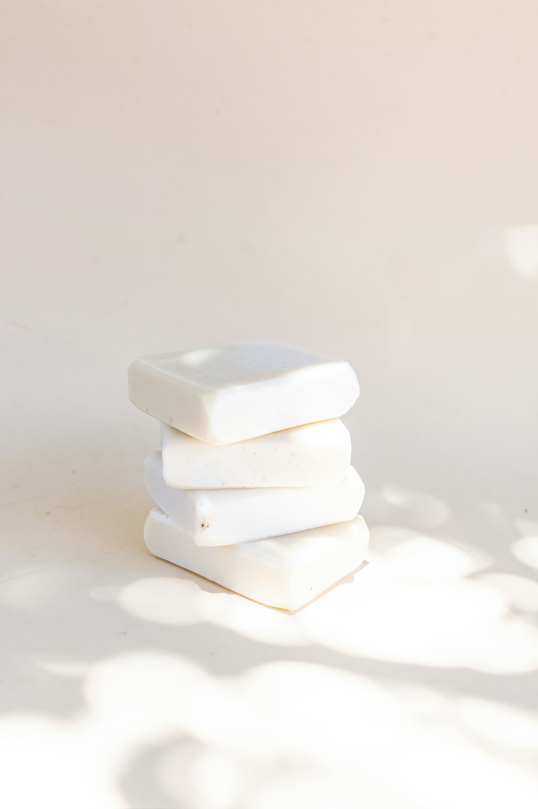
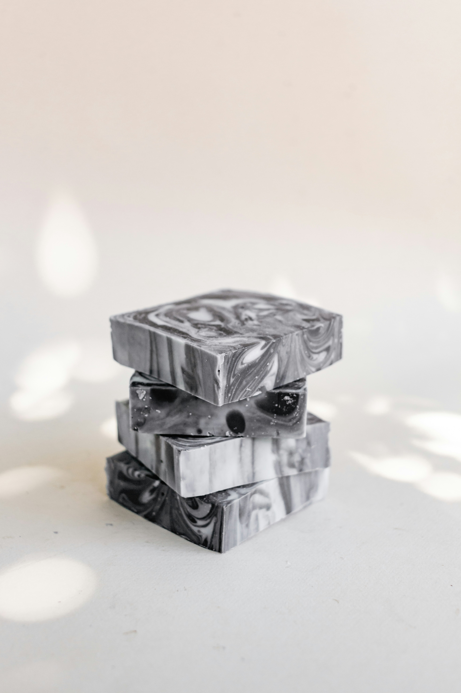
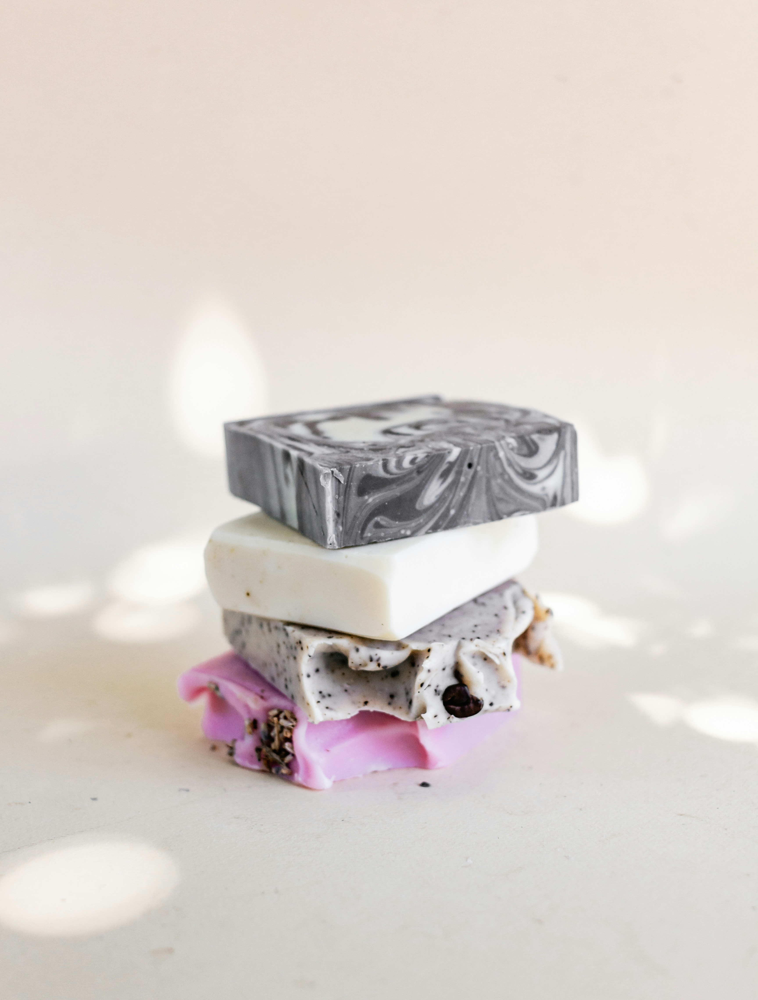

A softer beginning
NATURAL SOAP · EVERYDAY RITUALS
A LITTLE NATURE.
A LOVELY LATHER.
A quieter start. A slower finish.
Meet three little ways to make the everyday feel a little more considered.

OAT & SHEA
CHARCOAL & CEDARGround yourself
THE CHARCOAL & CEDAR BAR
A DARK SWIRL.
A FRESH START.
An imagined blend of activated charcoal, olive oil and shea butter, with a warm cedarwood scent. Deep grey ribbons make every bar its own little landscape.
Your daily little luxury
THE BOTANICAL TRIO
THREE MOODS.
ONE LITTLE RITUAL.
For the days you want a little of everything. Imagine creamy oat, marbled charcoal, and a rose-coloured botanical bar, brought together in one beautifully varied collection.

THE BOTANICAL TRIOKeep it simple
START WITH
SOMETHING SOFT.
THE OAT & SHEA BAR
Our creamy-white bar is imagined with finely milled oats, shea butter and coconut oil. A softly textured, unscented-inspired blend for an uncomplicated daily ritual.